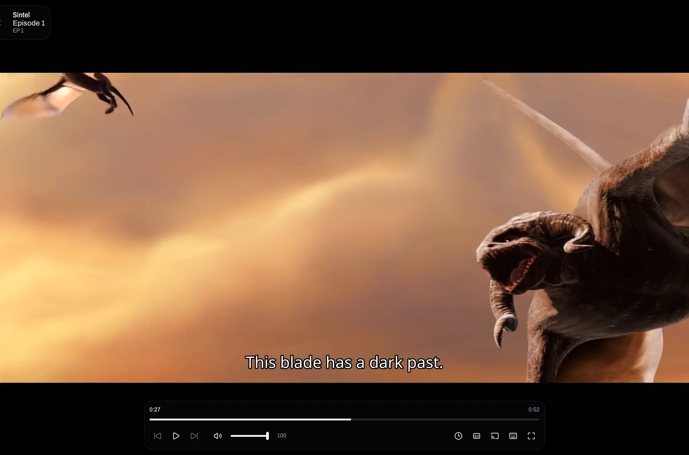
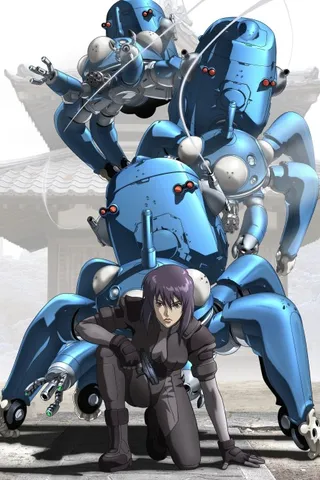
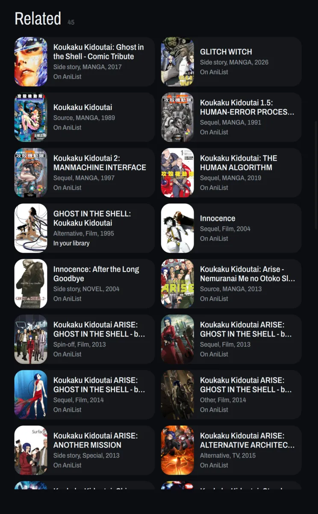

Your anime folder, as a library you can watch and track.
AniBeam finds every show in the folder, matches it on AniList and plays it right in the window.

Drop files in.
Get a library.
Point AniBeam at a folder and every show in it turns up matched, with its poster, its synopsis and what airs next. New files appear on their own.
Ghost in the Shell/Ghost in the Shell (1995).mkvGhost in the ShellFilm, 1995Cowboy Bebop/Cowboy Bebop - 05.mkvCowboy Bebop26 episodesEvangelion/Neon Genesis Evangelion - 19.mkvNeon Genesis Evangelion26 episodesLain/Serial Experiments Lain - 03.mkvSerial Experiments Lain13 episodesFrieren/Sousou no Frieren - 12.mkvSousou no Frieren28 episodesFilms/Akira (1988).mkvAkiraFilm, 1988
What AniBeam does
AniBeam plays in the window, syncs to AniList and MyAnimeList, remembers where you stopped, finds every sequel and casts to your TV.


- AniList
45 / 26Updated - MyAnimeList
45 / 26Updated
Cowboy BebopEpisode 6, 14 min left
Stand Alone ComplexEpisode 9 Steins;GateEpisode 11
Steins;GateEpisode 11 EvangelionEpisode 20
EvangelionEpisode 20
- Living room TVPlaying
- Bedroom TVDLNA
- This computer
Your files stay yours.
No server
It reads your folder directly. Nothing to host and nothing to keep running.
No account
Connect AniList or MyAnimeList if you want tracking. Everything else works without one.
No telemetry
It talks to AniList, MyAnimeList, a few show-info sites and GitHub for updates. Nothing reports back.
Open source
GPL 3.0, every line on GitHub.
Get AniBeam.
yay -S anibeam-binThe AppImage runs on Ubuntu 24.04, Debian 13, Fedora 40 and newer. Arch has it in the AUR.
Windows 10 and 11. Installs for you alone, with no admin prompt. If SmartScreen stops it, click More info, then Run anyway.
brew install --cask marcusbandit/anibeam/anibeammacOS 15 and newer on Apple silicon. The first launch asks once: System Settings, Privacy & Security, Open Anyway.
The phone keeps a library of its own and tracks to the same AniList or MyAnimeList account. It can also play your computer's library from anywhere over Tailscale.